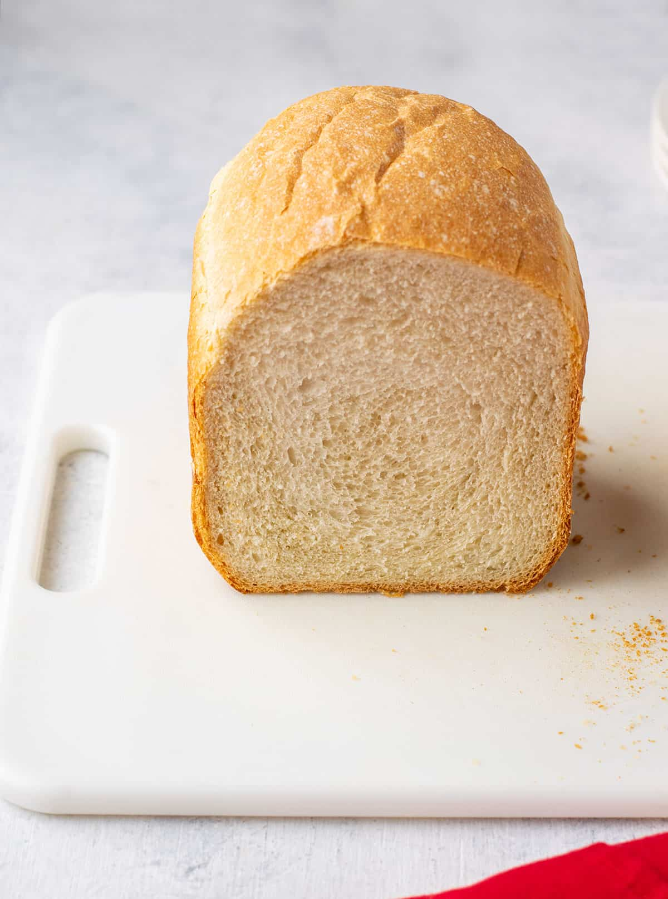

Bread Machine Italian Bread★ Traditional Italian Bread
 12
servings
12
servings 3
hours
3
hours Source
Source Vegan
Vegan

1 cupwarm water (80-90 degrees F)2 tbspolive oil1 tbspwhite sugar1¼ tspsalt3 cupsbread flour1½ tspbread machine or instant yeast
Place ingredients in your machine in the order listed or recommended by your manufacturer.
Select the Basic/White bread setting (1½ lbs), select light or medium crust, and press start.
Remove loaf from the machine after the cycle is done; cool in the pan for 5 minutes before turning it out onto a rack to cool completely.